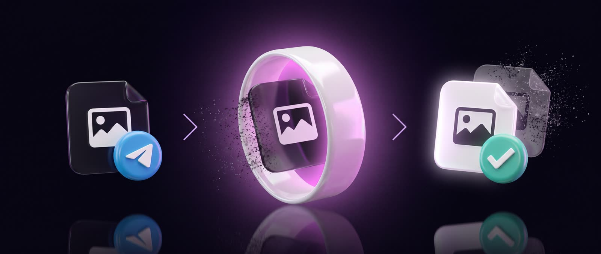
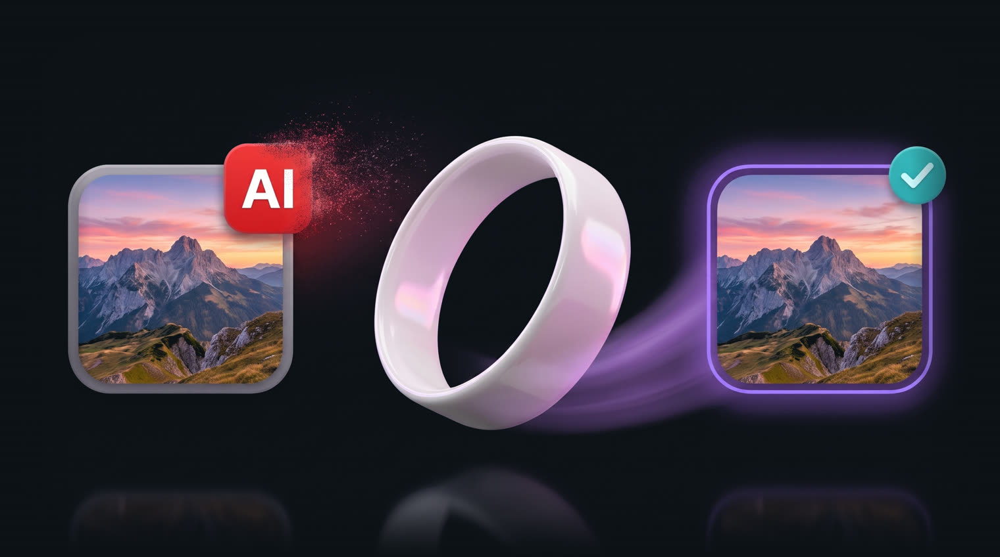
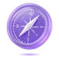

Как это работает
Пришли фото или видео как файл, без сжатия.
Уберём ИИ-следы и метки «создано ИИ», перенесём данные реальной камеры, зададим любое место и время съёмки.
Файл выглядит как снятый на телефон. Без потери качества.
Файл не остаётся у нас

Ничего не хранимОтправил файл → обработка → получил обратно → с сервера файл удалён
Что соцсети находят в необработанном файле
Instagram, TikTok и YouTube читают файл при загрузке. Находят след нейросети – вешают метку «Создано ИИ»: несъёмную, видимую всем подписчикам.

| След в файле | Threads | TikTok | YouTube | X | |
|---|---|---|---|---|---|
| Скрытая подпись нейросетифайл сам сообщает, что сделан ИИ | повесят метку | повесят метку | повесят метку | повесят метку | могут пометить |
| Ярлык «создано ИИ»оставляют нейронки и фоторедакторы | повесят метку | повесят метку | повесят метку | могут пометить | могут пометить |
| Имя нейросети в свойствахMidjourney, Sora, Gemini/Nano Banana, GPT, Kling, Seedance | могут пометить | могут пометить | могут пометить | могут пометить | просто уберут |
| Гео и серийник исходного файлаостаются после фоторедакторов – соцсеть читает их первой | прочитают и уберут | прочитают и уберут | прочитают и уберут | прочитают и уберут | прочитают и уберут |
| Файл совсем без данных камерытак выглядят файлы после онлайн-чистилок и скриншоты | пропустят с подозрением | пропустят с подозрением | пропустят с подозрением | пропустят с подозрением | пропустит спокойно |
| Файл после remorviданные реальной камеры, следов не остаётся | чисто | чисто | чисто | чисто | чисто |
Листай таблицу в сторону →
Что умеет
Данные реальной камеры профиль твоего устройства – 200+ параметров с твоего снимка или из 30+ пресетов: iPhone, Samsung, Ray-Ban Meta. То, чего не сделает браузерная чистилка
Ни следа нейросети убираем ИИ-метки и подозрительные метаданные – платформам нечего пометить
Фото и видео JPEG, PNG, HEIC, MP4, MOV, без пережатия
Любая локация и время контент будто снят там, где захочешь
Массовая обработка до 20 файлов любого размера сразу
RU / EN бот говорит на двух языках
8 400+ человек обработали 38 235 файлов через remorvi
Как это выглядит
Что говорят
Раньше на таком контенте постоянно ловил плашку. После обработки в Remorvi уже второе видео выходит без метки. По охватам пока ещё смотрю, но уже сам факт, что плашка больше не вылезает, очень радует.
– Спокойный котЗалил фото в Instagram, хотя сам сижу с мобильного интернета Украины. В посте поставил гео США, потому что в боте выбрал Флориду, и Instagram нормально это считал – даже показал, что до локации около 0,5 км. Выглядит очень реалистично.
– Находчивый лисЗалил так 9 видосов подряд – гео видите на скринах. Хорошо помогло в настройке гео на двух разных аккаунтах: на новом с первого видоса аудитория пошла на Америку и Корею.
– Шаловливый пёсОтзывы из нашего Telegram-сообществаИстории реальных пользователей @remorvibot – гео на скринах их аудитории
Частые вопросы
Фото или видео изменится внешне?
Нет. Сама картинка не меняется ни на пиксель: работаем только со служебными данными внутри файла. Качество остаётся исходным.
Откуда берутся данные реальной камеры?
Из профиля устройства: пришли свой снимок, и remorvi соберёт с него профиль твоей камеры. Или выбери из 30+ готовых пресетов: iPhone, Samsung, Ray-Ban Meta и другие.
Что происходит с файлами после обработки?
Отправил файл в бота → обработка → получил обратно → с сервера файл удалён. Не храним и никому не передаём.
Какие форматы поддерживаются?
Фото: JPEG, PNG, HEIC. Видео: MP4, MOV. Отправляй так: 📎 → «Файл», не «Фото» – иначе Telegram сожмёт файл при загрузке.
Сколько стоит?
Новым пользователям – 3 дня Unlimited бесплатно, со всеми возможностями. Дальше два тарифа: Free (1 файл в день) и Unlimited за 899 ₽/мес.
Что дальше

Над чем работаемЧтобы готовить контент к публикации было ещё проще- СкороПроверка прямо в браузере
Увидишь, что соцсети найдут в файле, ещё до публикации – файл остаётся на твоём устройстве.
- В планахОткрытая библиотека
Движок, который находит ИИ-следы в файле – выложим в открытый доступ.
- В планахОткрытые правила платформ
Таблица: за что повесят метку «Создано ИИ», отправят в тень, урежут охваты или забанят.